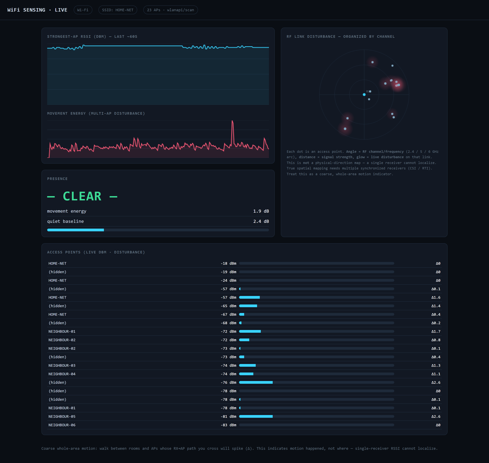

STOCK NIC
The radio already in the machine. wlanapi reads real signed dBm per access point — not the 0–100% quality number, and no monitor mode.
WLANAPI
PURE STDLIB
08 · DESKTOP · WHOLE-AREA PRESENCE
Motion sensing with hardware you already own.
Reads per-AP signal strength off the WiFi radio already in your Windows machine, and flags motion when several nearby links are disturbed at once. Coarse by design — read what it doesn't do before the features.
NO BUILD PUBLISHED YET — WINDOWS ONLY WHEN IT SHIPS.

Real capture from a stock Intel NIC — 23 access points, unmodified RSSI and disturbance values. Network names and BSSIDs are masked: they are indexed by public wardriving databases and would give away the receiver's location.
IT KNOWS SOMETHING MOVED.
NOT WHO. NOT WHERE.
Not imaging. Not through-wall tracking. Not per-person identification.
No localization. One receiver has no bearing; the dashboard's radial view is organized by RF channel, not physical direction.
Windows throttles scans below 1 Hz. It misses subtle motion and is tuned to not false-alarm, in that order.
Synthetic benchmark: ~30% detection at 0% false positives. That is an upper bound, not a promise — measure on your own floor plan.
Active scanning briefly pulls the radio off-channel and can nick your own WiFi throughput.
The radio already in the machine. wlanapi reads real signed dBm per access point — not the 0–100% quality number, and no monitor mode.
Userland only — no kernel driver, no admin rights, no install step. Unzip, run, done. Uninstall is deleting a folder.
Every access point in range becomes a tripwire. Cross an RX→AP path anywhere in the space and the disturbance registers.